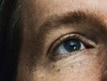
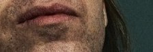
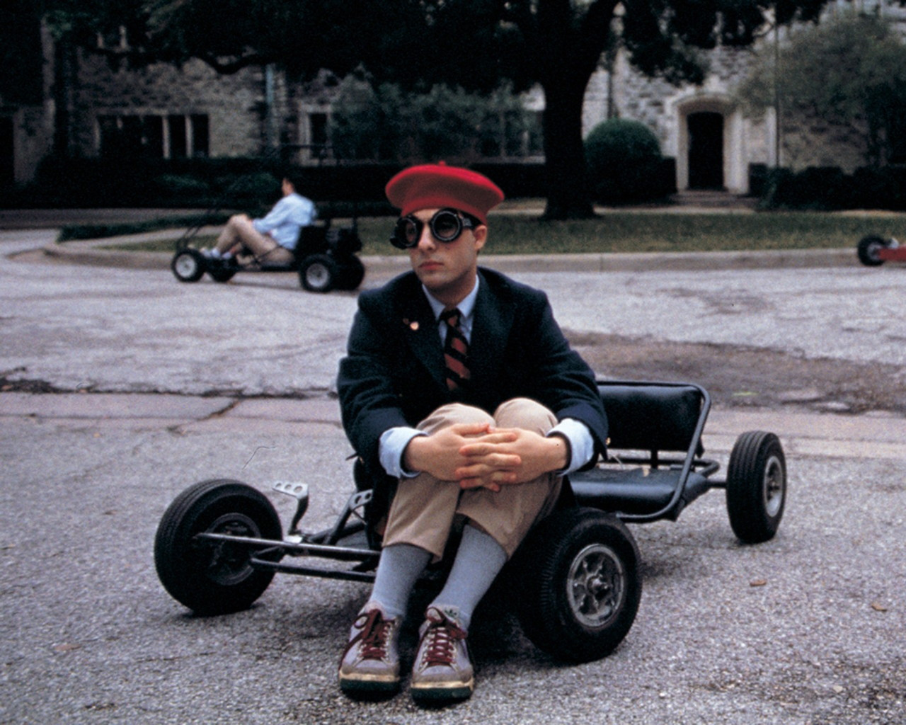

Wesley Wales Anderson (born May 1, 1969) is an American filmmaker.
His films are known for their distinctive visual and narrative styles.
Anderson is regarded by many as a modern-day example of the auteur.
He has received consistent praise from critics for his work, and three of
his films—The Royal Tenenbaums, Moonrise Kingdom, and The Grand Budapest
Hotel—appeared in BBC's 2016 poll of the greatest films since 2000.
Wes Anderson
"I don't think any of us are normal people."

PHOTOGRAPHY BY DANIEL JACKSON


Anderson was nominated for the Academy Award for Best Original Screenplay
for The Royal Tenenbaums in 2001, Moonrise Kingdom in 2012 and The Grand
Budapest Hotel in 2014, as well as the Academy Award for Best Animated
Feature for Fantastic Mr. Fox in 2009. He received his first Academy
Award nomination for Best Director and won the Golden Globe Award for
Best Motion Picture – Musical or Comedy for The Grand Budapest Hotel in 2014.
He also received the BAFTA Award for Best Original Screenplay in 2015.
He currently runs production company American Empirical Pictures,
which he founded in 1998. Anderson won the Silver Bear for Best Director
for the stop-motion animated film Isle of Dogs in 2018.
Visual style
Anderson has been noted for his extensive use of flat space camera moves, obsessively symmetrical compositions, knolling, snap-zooms, slow-motion walking shots, a deliberately limited color palette, and hand-made art direction often utilizing miniatures. These stylistic choices give his movies a highly distinctive quality that has provoked much discussion, critical study, supercuts, and mash-ups, and even parody. Many writers, critics, and even Anderson himself, have commented that this gives his movies the feel of being
From The Life Aquatic on, Anderson has relied more heavily on stop motion animation and miniatures, even making entire features with stop motion animation with Fantastic Mr. Fox and Isle of Dogs.
Anderson has been noted for his extensive use of flat space camera moves, obsessively symmetrical compositions, knolling, snap-zooms, slow-motion walking shots, a deliberately limited color palette, and hand-made art direction often utilizing miniatures. These stylistic choices give his movies a highly distinctive quality that has provoked much discussion, critical study, supercuts, and mash-ups, and even parody. Many writers, critics, and even Anderson himself, have commented that this gives his movies the feel of being
self-contained worlds, or a
scale model household. According to Jesse Fox Mayshark, his films have "a baroque pop bent that is not realist, surrealist or magic realist", but rather might be described as
fabul[ist].
From The Life Aquatic on, Anderson has relied more heavily on stop motion animation and miniatures, even making entire features with stop motion animation with Fantastic Mr. Fox and Isle of Dogs.
Isle of Dogs
Isle of Dogs is a 2018 stop-motion-animated science-fiction comedy film written, produced and directed by Wes Anderson. Set in a dystopian near-future Japan, the story follows a young boy (Koyu Rankin) searching for his dog after the species is banished to an island following the outbreak of a canine flu. The film's ensemble voice cast includes Bryan Cranston, Edward Norton, Bill Murray, Jeff Goldblum, Bob Balaban, Greta Gerwig, Frances McDormand, Courtney B. Vance, Fisher Stevens, Harvey Keitel, Liev Schreiber, Scarlett Johansson, Tilda Swinton, F. Murray Abraham, Frank Wood, Kunichi Nomura, and Yoko Ono.

The Grand Budapest Hotel
The Grand Budapest Hotel is a 2014 comedy film written and directed by Wes Anderson, from a story by Anderson and Hugo Guinness, inspired by the writings of Stefan Zweig, to whom Anderson wrote the film as a tribute. The Grand Budapest Hotel tells the story of two people: Monsieur Gustave H. (Ralph Fiennes), a concierge, one of his employees, the lobby boy Zero (Tony Revolori), and the friendship they form as they team up for several misadventures while trying to prove Gustave's innocence after he was framed for murder.

Moonrise Kingdom
Moonrise Kingdom is a 2012 American coming-of-age film directed by Wes Anderson, written by Anderson and Roman Coppola. It features newcomers Jared Gilman and Kara Hayward leading a cast including Bruce Willis, Edward Norton, Bill Murray, Frances McDormand, Tilda Swinton, Jason Schwartzman, and Bob Balaban. It is about a young orphan (Gilman) who escapes from a scouting camp on an island to unite with his pen pal, a girl (Hayward) with aggressive tendencies.

Fantastic Mr. Fox
Fantastic Mr. Fox is a 2009 American stop motion animated comedy film directed by Wes Anderson, based on Roald Dahl's 1970 children's novel of the same name. The film is about a fox who steals food each night from three mean and wealthy farmers. They are fed up with Mr. Fox's theft and try to kill him, so they dig their way into the foxes' home, but the animals are able to outwit the farmers and live underground.

The Darjeeling Limited
The Darjeeling Limited is a 2007 American comedy-drama film directed by Wes Anderson which he co-produced with Scott Rudin, Roman Coppola and Lydia Dean Pilcher and co-wrote with Coppola and Jason Schwartzman. The film stars Owen Wilson, Adrien Brody and Schwartzman and also features Waris Ahluwalia, Amara Karan, Barbet Schroeder and Anjelica Huston with Natalie Portman, Camilla Rutherford, Irrfan Khan and Bill Murray in cameo roles.

The Life Aquatic with Steve Zissou
The Life Aquatic with Steve Zissou is a 2004 American comedy-drama film directed, co-written, and co-produced by Wes Anderson. It is Anderson's fourth feature-length film and was released in the United States on December 25, 2004. It was written by Anderson and Noah Baumbach and was filmed in and around Naples, Ponza, and the Italian Riviera.

Royal Tenenbaums
The Royal Tenenbaums is a 2001 American comedy-drama film directed by Wes Anderson and co-written with Owen Wilson. The film stars Danny Glover, Gene Hackman, Anjelica Huston, Bill Murray, Gwyneth Paltrow, Ben Stiller, Luke Wilson, and Owen Wilson. Ostensibly based on a non-existent novel, and told with a narrative influenced by the literature of J.D. Salinger, the story follows the lives of three gifted siblings who experience great success in youth, and even greater disappointment and failure in adulthood.

Rushmore
Rushmore is a 1998 American comedy-drama film directed by Wes Anderson about an eccentric teenager named Max Fischer (Jason Schwartzman in his film debut), his friendship with rich industrialist Herman Blume (Bill Murray), and their mutual love for elementary school teacher Rosemary Cross (Olivia Williams). The film was co-written by Anderson and Owen Wilson. The soundtrack was scored by regular Anderson collaborator Mark Mothersbaugh and features several songs by bands associated with the British Invasion of the 1960s.

Bottle Rocket
Bottle Rocket is a 1996 American crime-comedy film directed by Wes Anderson. It was co-written by Anderson and Owen Wilson. In addition to being Wes Anderson's feature-length directorial debut, Bottle Rocket was the debut feature for brothers Owen and Luke Wilson, who co-starred with James Caan and Robert Musgrave.